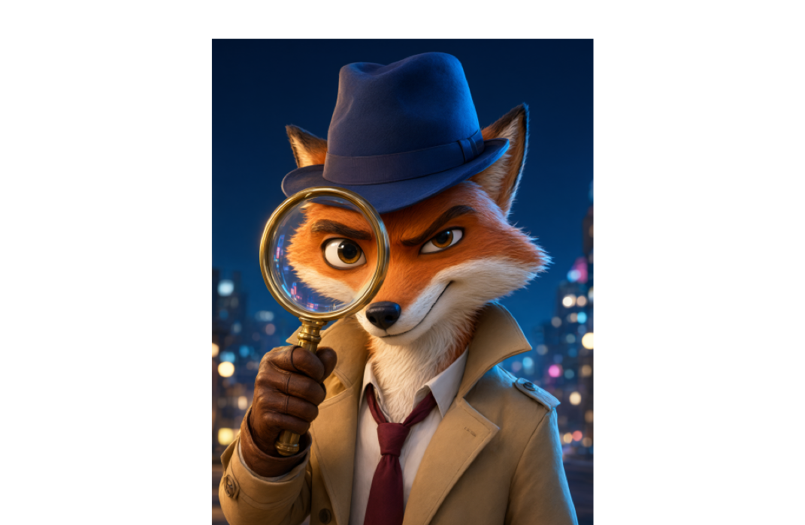

IT CampМетодический пакетПробное занятие, 60 минут
Qwen
Генерация фото и видео собственных персонажей
Тема занятия
Создание собственного персонажа с помощью Qwen: генерация изображения персонажа и короткого видео с его участием.
Цель занятия
Научить обучающихся за 60 минут придумать персонажа, составить промпт для генерации изображения, получить фото/арт персонажа и создать короткое видео с этим персонажем, используя возможности Qwen.
Оборудование и материалы
Компьютеры с доступом в интернет
Открытый доступ к Qwen или интерфейсу, где доступны генерация изображений и видео.
Аккаунты обучающихся или общий демо-доступ, если личная регистрация невозможна.
составить короткий промпт для видео: одно действие + движение камеры;
сгенерировать или собрать короткое видео/анимацию персонажа длительностью 3–5 секунд;
проверить результат на соответствие правилам безопасности и возрасту;
представить работу соседом и объяснить, кто их персонаж и что он делает.
Минимальный результат пробного урока
Каждый обучающийся уходит с:
одной идеей персонажа;
одним сохранённым изображением персонажа;
одним промптом к изображению;
одним коротким видео или серией кадров с персонажем;
пониманием, что хороший результат зависит от точного и простого запроса.
Структура занятия
Этап
Время
Организационный момент
3 мин
Введение: кто такой персонаж?
4 мин
Интерфейс Qwen и правила безопасности
7 мин
Конструктор промпта: фото и видео
5 мин
Создание основы персонажа
7 мин
Генерация вариантов и детализация
15 мин
Перерыв / физкультминутка
2 мин
Создание видео персонажа
8 мин
Предпросмотр и доработка
3 мин
Демонстрация и подведение итогов
6 мин
Итого
60 мин
ХОД ЗАНЯТИЯ
ЭТАП 1. Организационный момент
Время: 3 минуты
Преподаватель:
приветствует группу;
проверяет готовность рабочих мест;
убеждается, что все открыли Qwen или нужный сервис;
напоминает, что сегодня дети будут не просто играть с нейросетью, а создавать собственного персонажа;
просит не загружать личные фотографии одноклассников, друзей, родственников и реальных людей.
Вопросы детям:
«Кто любит придумывать героев?»
«Какой персонаж из мультфильма, игры или фильма вам нравится больше всего?»
«Как вы думаете, можно ли за один урок создать своего героя и даже сделать с ним короткое видео?»
Краткое обсуждение:
Дети отвечают устно. Не нужно долго анализировать ответы. Главное — включить группу и создать ощущение: сегодня мы делаем творческую работу, а не просто учимся нажимать кнопки.
Ожидаемый результат этапа:
Все обучающиеся находятся на рабочих местах, Qwen открыт, внимание переключено на преподавателя.
ЭТАП 2. Введение: кто такой персонаж?
Время: 4 минуты
Объяснение:
Персонаж — это не просто картинка. Это герой с внешностью, характером и действием.
Чтобы персонаж получился интересным, у него должны быть хотя бы три элемента:
Кто он? Например: кот-космонавт, робот-садовник, лиса-детектив, дракончик-почтальон.
Как он выглядит? Цвет, одежда, форма, особая деталь: очки, рюкзак, крылья, шрам, антенна, плащ.
Что он делает? Идёт, машет рукой, прыгает, чинит механизм, держит карту, смотрит вдаль.
Пример на доске:
Персонаж = кто он + как выглядит + что делает
Примеры:
кот-космонавт в оранжевом скафандре стоит на луне и машет лапой;
робот-садовник поливает цветы в мультяшном саду;
лиса-детектив в шляпе держит увеличительное стекло;
маленький дракон читает книгу в библиотеке.
Главная идея для детей:
Сегодня каждый придумает своего героя, получит его изображение и сделает короткое видео, где персонаж совершает одно простое действие.
Ожидаемый результат этапа:
Дети понимают, что персонаж — это не случайная картинка, а образ с ролью, внешностью и действием.
ЭТАП 3. Интерфейс Qwen и правила безопасности
Время: 7 минут
Показываем основное:
Новый чат / новое задание Где начинать работу, чтобы не мешать прошлым запросам.
Текстовый ввод Куда писать запрос для создания промпта или описания персонажа.
Генерация изображения Где находится кнопка или режим создания картинки.
Генерация видео Где находится режим создания короткого ролика, если он доступен.
История и сохранения Где найти ранее созданное изображение или видео.
Скачивание / сохранение Куда сохранять результат в папку Урок_Qwen_Персонажи.
Правила безопасности
Обязательно проговорите детям:
не генерируем реальных людей;
не используем фотографии одноклассников, друзей, родителей;
не создаём страшные, агрессивные, сексуализированные или запрещённые по возрасту образы;
не просим нейросеть делать знаменитостей без разрешения;
если получилась странная, пугающая или неподходящая картинка — не смеемся и не распространяем, а показываем преподавателю;
используем только выдуманных персонажей.
Фраза-якорь для детей:
Мы делаем героя из воображения, а не копируем реальных людей.
Если в интерфейсе нет отдельной кнопки видео:
Заранее подготовьте запасной вариант:
сгенерировать 3 кадра персонажа в разных позах;
склеить их в простую анимацию;
или использовать любой доступный бесплатный видеоредактор;
либо попросить Qwen составить раскадровку для будущего видео.
Но основная методичка рассчитана на то, что дети получат именно видео или анимированный ролик.
Ожидаемый результат этапа:
Дети знают, где вводить запрос, где сохранять результат и какие правила нельзя нарушать.
ЭТАП 4. Конструктор промпта: фото и видео
Время: 5 минут
Объясняем детям:
Промпт — это задание для нейросети. Чем понятнее задание, тем лучше результат.
мультяшный кот-космонавт, дружелюбный, в оранжевом скафандре с белыми вставками, стоит на луне, 3D-рендер, Pixar-style, полный рост, вид спереди, мягкий закатный свет, чистый фон
Negative prompt, если есть поле:
реальный человек, фото человека, текст, водяной знак, лишние пальцы, деформированные руки, размытость, nsfw, страшное лицо
лиса-детектив + синяя шляпа + смотрит в увеличительное стекло;
кот-космонавт + оранжевый скафандр + машет лапой;
дракончик-почтальон + сумка с письмами + летит над деревней.
Шаг 2. Попросить Qwen помочь сформулировать промпт
Дети могут написать в чат:
Помоги составить короткий промпт для генерации изображения персонажа: мультяшный кот-космонавт в оранжевом скафандре, стоит на луне, 3D-стиль, полный рост.
Или:
Сделай промпт для видео: этот кот-космонавт медленно машет лапой, камера приближается, 4 секунды.
Шаг 3. Сгенерировать первое изображение
Дети вставляют полученный промпт в режим генерации изображения.
Требования к первому результату:
персонаж должен быть виден целиком или хотя бы по пояс;
фон не должен быть слишком сложным;
стиль должен быть понятным: мультяшный, 3D, аниме, low poly, сказочный;
у персонажа должна быть одна запоминающаяся деталь.
Ожидаемый результат этапа:
У каждого ребёнка есть первое изображение персонажа или хотя бы черновой вариант.
ЭТАП 6. Генерация вариантов и детализация
Время: 15 минут
Это основной творческий этап.
Задача:
Улучшить персонажа: сделать его более узнаваемым, аккуратным и интересным.

Вариант 1. Изменить стиль
Если персонаж получился слишком реалистичным или страшным, добавить:
cartoon style, 3D render, friendly character, clean background, soft lighting
или по-русски:
мультяшный стиль, дружелюбный персонаж, чистый фон, мягкий свет
Вариант 2. Добавить одну деталь
Просите детей добавлять не больше одной-двух новых деталей.
Примеры:
очки;
рюкзак;
плащ;
антенна;
шляпа;
сумка;
крылья;
ботинки;
значок;
цветок в руке.
Важно:
Не превращать персонажа в новогоднюю ёлку. Одна деталь делает героя запоминающимся, десять деталей создают кашу.
Вариант 3. Сделать ракурс понятнее
Если персонаж непонятно стоит, добавьте:
front view, full body, character sheet, clean background
или:
вид спереди, в полный рост, лист персонажа, чистый фон
Вариант 4. Исправить руки и лицо
Частая проблема нейросетей: пальцы, руки, глаза.
Что делать:
упростить позу;
убрать лишние предметы из рук;
добавить negative: extra fingers, deformed hands, bad anatomy, blurry face
попросить Qwen переписать промпт короче;
перегенерировать 1–2 раза, не больше.
Работа с Qwen как с помощником
Дети могут писать:
Мой персонаж получился страшным. Перепиши промпт, чтобы он стал дружелюбным мультяшным героем.
или:
Сократи мой промпт до одной строки, чтобы нейросеть лучше поняла персонажа.
Темповые отметки преподавателя:
«Через 3 минуты у каждого должен быть хотя бы один нормальный вариант».
«Через 7 минут выбираем лучший кадр».
«Через 10 минут сохраняем промпт и готовимся к видео».
«Кто застрял — упрощаем: один персонаж, одна деталь, одно действие».
Дети убедились, что их персонаж работает в движении, и внесли минимум исправлений.
ЭТАП 9. Демонстрация и подведение итогов
Время: 6 минут
Формат «мини-галерея»
Так как урок пробный и времени мало, полный показ всех работ может не поместиться. Используем парный формат.
Действия:
Каждый ребёнок показывает соседу:
изображение персонажа;
видео или раскадровку;
свой главный промпт.
Сосед отвечает одним предложением:
«Мне запомнилось, что твой персонаж...»
Если есть 2–3 добровольца и техника позволяет, покажите их работы на проекторе.
Вопросы детям:
Кто понял, что такое промпт?
Что было сложнее: придумать персонажа, получить хорошее фото или сделать видео?
Какое слово в промпте сильнее всего изменило результат?
Что бы вы добавили своему персонажу, если бы урок был длиннее?
Хотели бы вы сделать целую игру, мультфильм или комикс с этим персонажем?
Подведение итогов преподавателем:
Можно сказать:
Сегодня вы прошли путь создателя: придумали героя, описали его языком нейросети, получили изображение, улучшили детали и оживили персонажа в видео. Это уже не просто картинка — это начало вашего собственного мира.
Итог занятия:
К концу пробного урока каждый обучающийся создаёт собственного персонажа в Qwen, получает изображение и короткое видео или анимационную заготовку, а также понимает, как структурированно составлять промпты.
real person, photo of human, text, watermark, extra fingers, deformed hands, blurry face, nsfw, scary, violent
Минимум для успеха
один выдуманный персонаж;
одно сохранённое изображение;
один короткий промпт;
одно видео или три кадра-раскадровки;
соблюдение правил безопасности.
Примеры готовых промптов для детей
1. Кот-космонавт
Фото:
мультяшный кот-космонавт, дружелюбный, в оранжевом скафандре с белыми вставками, стоит на луне, 3D render, Pixar style, full body, front view, soft sunset lighting, clean background
Видео:
the same cartoon cat astronaut slowly turns head and waves paw, camera slow push-in, moon dust, friendly mood, 4 seconds
2. Робот-садовник
Фото:
cute small robot gardener, green antenna, watering can, flower garden, cartoon 3D render, bright daylight, full body, simple background
Видео:
the same cute robot gardener waters a flower with a watering can, camera gently follows, sunny garden, 3 seconds
3. Лиса-детектив
Фото:
clever fox detective, blue hat, magnifying glass, night city, cartoon style, 3D render, front view, dramatic soft light, clean background
Видео:
the same fox detective raises magnifying glass and smiles slightly, slow camera zoom, mysterious night city, 4 seconds
4. Дракончик-почтальон
Фото:
small friendly dragon postman, red mail bag, flying over village, cartoon 3D render, bright morning light, full body, simple sky background
Видео:
the same small dragon postman flies forward and drops a letter into a mailbox, gentle camera tracking, cheerful morning, 4 seconds
Чек-лист самопроверки ученика
Перед сдачей работы ребёнок проверяет:
Мой персонаж выдуманный, не реальный человек.
У персонажа есть понятная роль.
Есть одна запоминающаяся деталь.
Я сохранил лучшее изображение.
Я сохранил промпт.
В видео персонаж делает одно простое действие.
Результат не страшный и не запрещённый.
Я могу объяснить, кто мой персонаж и что он делает.
придумать имя и одну короткую историю: «Мой персонаж ищет потерянную звезду».
Если ребёнку сложно
Помогите так:
оставьте только один персонаж;
уберите сложный фон;
используйте готовый шаблон промпта;
сделайте не видео, а 3 кадра;
выберите самое простое действие: стоит, машет, поворачивает голову.
Если группа очень сильная
Можно добавить мини-вызов:
Сделайте так, чтобы сосед угадал характер персонажа только по видео: добрый, хитрый, храбрый, смешной или загадочный.
Возможные ошибки преподавателя и как их избежать
Ошибка
Как исправить
Дать детям слишком свободную тему
Сразу дать конструктор и примеры
Разрешить генерировать реальных людей
Жёстко запретить и объяснить причину (буллинг)
Позволить бесконечно перегенерировать
Ввести лимит: 3 попытки на фото, 1–2 на видео
Не показать сохранение результата
В начале урока показать папку и кнопку скачать
Делать видео слишком сложным
Требовать одно действие и короткую длительность
Не предусмотреть отсутствие видео-функции
Подготовить запасной вариант с раскадровкой
Потерять темп на обсуждении
Держать таймер и голосовые отметки
Итоговая фраза для завершения урока
Сегодня вы не просто нажали кнопку «сгенерировать». Вы стали авторами: придумали героя, научились объяснять его нейросети, получили картинку и оживили персонажа. Это первый шаг к созданию собственной игры, мультфильма или целой вселенной.